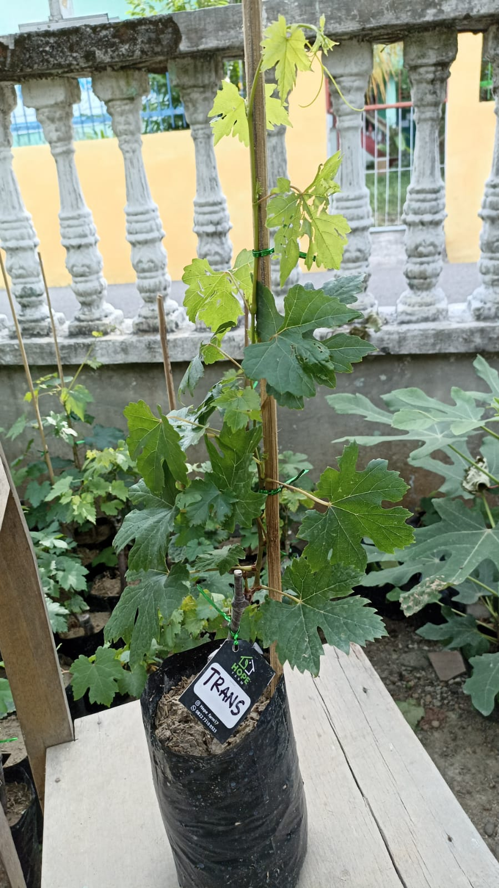

Bibit Jupiter
Quick ViewBibit Jupiter
Anggur jupiter adalah salah satu jenis anggur tanpa biji atau seedless dengan daging tebal dan berukuran sedang yang berasal dari Amerika. Dimana tanaman anggur jenis ini termasuk dalam salah satu jenis anggur import unggulan karena mempunyai kemampuan untuk beradaptasi dengan sangat baik di berbagai macam daerah yang memiliki suhu berbeda-beda.
- Bibit Biasa = Rp. 125000
- Bibit Unggulan = Rp. 200000
Bibit Dixon
Quick ViewBibit Dixon
Anggur Dixon termasuk yang dikenal memiliki adaptasi yang tinggi terhadap lingkungan, tahan dari penyakit tanaman dan mudah dalam perawatannya. Buahnya perpaduan warna hijau kekuningan dengan serabut merah muda saat matang, bentuknya bulat silinder. Anggur Dixon memiliki masa produktifnya 1-2 tahun dan akan mencapai puncak produksinya setelah berumur 4 tahun.
- Bibit Biasa = Rp. 125000
- Bibit Unggulan = Rp. 200000
Bibit Doubovski
Quick ViewBibit Doubovski
Anggur dubovski pink memiliki buah oval dengan ujung meruncing yangberwarna pink, Anggur dubovski Memiliki tandan buah yang besar ketika pohon sudah dewasa sekitar usia 3 tahun.Setiap tandan bisa mencapai berat 1.200 gram sampai 1.500 gram, dan akan tambah maksimal ketika ditanam didaerah yang cocok (daerah panas) dan diberikan pupuk secara rutin diutamakan pupuk organik.dan mampu berbuah saat usia 1 tahun dengan perawatan yang baik, namun tetap harus dengan perlakukan prunning atau pemangkasan cabang muda dan pengurangan daun secara besar besaran.
- Bibit Biasa = Rp. 125000
- Bibit Unggulan = Rp. 200000
Bibit Transfiguration
Quick View Bibit Transfiguration
Anggur transfiguration memiliki buah yang besar berbentuk lonjong papiler, waranya merah kekuningan saat matang. Tanaman ini juga di kenal memiliki kemampuan adaptasi yang sangat tinggi, yang terbukti mampu tumbuh baik di dataran rendah dengan iklim panas.
- Bibit Biasa = Rp. 125000
- Bibit Unggulan = Rp. 200000

Bibit Souvenir
Anggur Souvenir adalah varietas anggur anggur yang fantastis yang menarik perhatian Anda karena dua alasan: ia memiliki warna ungu-biru yang indah, dan anggur berbentuk kurma yang mengingatkan pada anggur Amerika Selatan tanpa biji.
- Bibit Biasa = Rp. 125000
- Bibit Unggulan = Rp. 200000
Bibit Everest
Quick ViewBibit Everest
Anggur Everest salah satu jenis anggur meja yang mudah berbuah namun masih tergolong langka. Buah Anggur Everest dikenal dengan bentuk buahnya yang lonjong dengan ujung sedikit menyempit, berwarna merah saat sudah matang. Daging buahnya tebal dan juicy. Buah anggur everest mempunyai rasa yang manis. Panen buah anggur ini dapat dinikmati saat tanaman sudah berumur 2-3 tahun. Produksi optimal mulai terjadi pada 3-4 tahun.
- Bibit Biasa = Rp. 125000
- Bibit Unggulan = Rp. 200000

Bibit Pegasus
Anggur Pegasus memiliki warna ungu tua hamper kehitaman. dengan bentuk oval, Daging buahnya juicy dan lembut Tiap butir buahnya memiliki biji rata-rata 2-3 butir saja. Anggur ini memiliki proses pematangan 125-130 hari.
- Bibit Biasa = Rp. 125000
- Bibit Unggulan = Rp. 200000
Bibit Nizina
Quick ViewBibit Nizina
Anggur Nizina ialah salah satu jenis table grape (anggur meja) yang buahnya berwarna hijau kemerahan. Dikatakan anggur meja karena buah anggur Nizina memiliki bentuk dan warna yang menarik. Selain itu, rasanya pun sangat manis. Anggur ini memiliki tipe pematangan yang tergolong cepat yakni 125-130 hari, anggur nizina dapat dinikmati saat tanaman sudah 2-3 tahun sejak penanaman dengan menggunakan bibit hasil okulasi.
- Bibit Biasa = Rp. 125000
- Bibit Unggulan = Rp. 200000